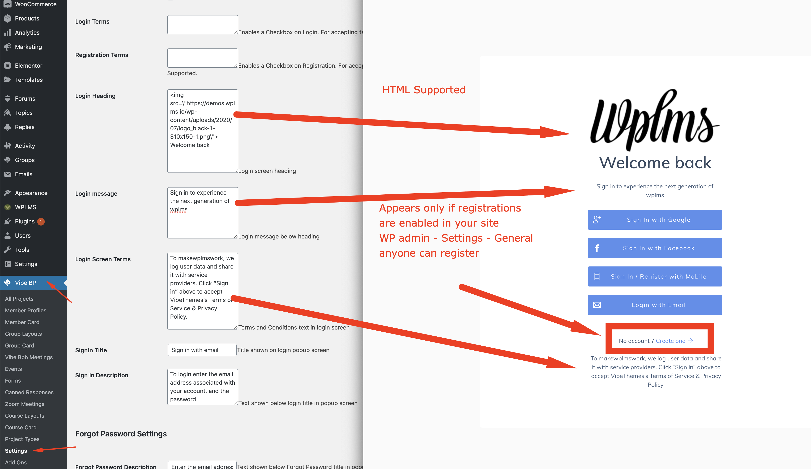
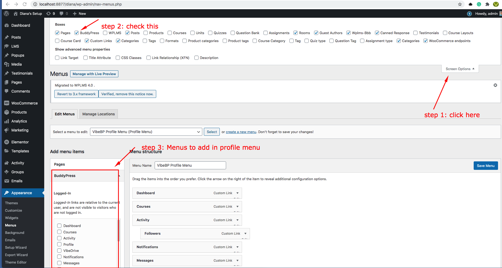

WPLMS Management for Administrators.
This is the adminstrator's guide for managing WPLMS. This guide deals in how things are setup and managed in the WPLMS.
Important Settings in the version 4
The WPLMS Version 4 is very different from its predecessor version 3. Following plugins must be active in order to use WPLMS : BuddyPress, VibeBP and WPLMS Plugin
Recommended plugins include : WPLMS PDF Certficates, Vibe Drive, Vibe Zoom, Vibe BBB, Vibe Calendar and Vibe HelpDesk.
For Selling courses : WooCommerce [Sell courses one by one], PaidMemberShips Pro PMPRO.
Here is a list of important settings that should always be configured in your WPLMS Setup.
A. Setup Purchase Code
To update the core plugins you are required to setup auto-updates. You need to go to WP admin - Dashboard - About WPLMS section and make sure there is no big red button asking you to add purchase code.
If tou see this then it means that your site is not configured for automatic updates of the free plugins included in the pack.
It means your plugins are not configured for auto-matic updates. Please click on the above button and follow the guide.
Video WalkThrough
As a rule of thimb we strongly recommend you to keep the theme and the plugins always up to date.
However during the course of updating the plugins it might happen that the plugins fail to download.
If nothing works, you can download the plugins via direct link shared here and install them from the WordPress Administration area - Plugins - Add new section.
B. Configure Login & Registration
The version 4 the login script is not loaded by default on the entire site. It is loaded when you enable the setting WP admin - VibeBP - Global Login. Also as this is a front end login system, you need to enable the WP Login sync as well for vibebp to recognise WP logged in users.
The Login customisation options in Customizer - Header - Login options would no longer work
The social logins are now integrated with Firebase. As WPLMS v4 uses a JWT login system, it is much different than existing logins.
We wanted the system to remain fast and not use server for social login integrations. For example : if 20 users use Facebook login in your site at the same time, your server ( a single cpu) would have immense amount of work to do as it would make a hit to facebook and send in credentials, generate WordPress session cookie and validate for all 20 users. Also maintain other tasks going on in the site. As compared to version 4 browser only system, the WPLMS uses 20 client CPU's to make the hits and only make the single hit to the server for registration. Cookie less, Fast and secure.
The server would only authenticate with firebase and firebase takes care of the rest of the integrations. Firebase is free, it provides "the" gold standard on how scalable login systems should be built. Several projects not just WPLMS but many use Firebase JWT classes to generate tokens. Also firebase takes care of evolving login patterns of these social networking sites.
The firebase takes care of integrating with social login without putting any stress on your server. Your server just maintains integration with firebase. The firebase requests are validated by public keys which the WPLMS site fetches from firebase every 15 minutes interval. So this is as secure as it can be.
I liked v3 Login, can i revert ? Can I use third party plugin like Digits ?We get this question a lot. Even though you lose out on tons of great options and sacrifice a lot on speed and even though I strongly recommend against this. Yes, you can still use old login system with WP login sync enabled in the WP admin - Vibebp - settings.
Why this setting is not enabled by default ? We have deliberately added this switch as in version 4 WPLMS can execute entirely on a single page. Yes, you do not need to convert your entire site into an LMS. That idea is actually a limitation of WordPress that to implement afunctionality as complex as Learning management system you have to add templates and implement functionality based on how WordPress functions. The WordPress lifted this with their HeadLess CMS concept.
Changing the messages in the login popup
As you as you enable this, you will be able to click on the login link in the header and it would open the new login popup. You would want to change the login screen text messages and the references to vibethemes & wplms. To change simply go to WP admin - VibeBP - Settings and you can change these messages easily
You can also customise this screen further by adding checkbox for login and registration screens.
The registration can be further modified. You may have requirements for a bigger registration form with custom information. In that case, you can setup a registration form.
Custom registration forms ›I want multiple registration forms, for instructors, students and more options.
We have some fantastic options available, you can explore the custom registration forms feature. This is really a useful feature considering the options it provides.
- Fill information directly in profile fields
- Embed Google captcha validation
- Enroll the user directly in a group / batch & into the courses.
- Assign a different user role for the site. So if you assign an instructor as role to anyone registering using that form. It becomes an Instructor registration form.
- If you are a school or community and have multiple member type requirements, you can assign custom member type to the user registring from the form.
- End output is a shortcode and that shortcode can be embedded at any place on site.
- Is built in native javascript, no jquery mode, so can work asynchronously.
- Assign a custom activation email template. Different activation email per registration form.
- Assign a custom welcome email template per form.
- Add some styling and any custom layout is possible. Show in tabs, show in two column format,
C. Profile Layout
A Profile layout is the display of member profile. In version 4 this is no longer the same BuddyPress profile. The disadvantage in BuddyPress profiles is that they do not allow page caching. The content on the profile pages is not static, for example the activity tab changes frequently, any content which comes frmo the server dynamically can not be cached by the browser, so a hit has to be made to the server to fetch the page hence such pages will always load slow. Other reasons, firstly a public profile displaying activity can be a privacy issue, secondly we really do not understand how useful it is for a third party user viewing the profile, none of the top sites have similar structure, including the facebook. A public profile should be static, configurable and showcase what the member wants to show.
The Profile layouts in WPLMS v4 are built using Elementor. In previous versions the profile pages were static hard coded templates but the v4 comes with the flexibility of building these layouts right form your favorite page builder.
You can create multiple profile layouts and assign these layouts to various member types.
You can create multiple layouts and by default the latest layout will apply on all the member profiles. Unless you set a member type value in the layout.
D. Directories
Directories form an integral part of WPLMS. The directories are no longer cookie and ajax based. Whole of the directories are now built on reactJS.
The directories leverage browser caching a lot, the member card views are saved in the browser session, which means that when you load the same member in the browser tab, it would not make any hit to your server.
At the same time if you make changes in your directory you will not notice the change. But if you just close the browser tab and open a new tab, you will see the updated results.
See below notice on how to edit directory pages
By default on upgrading you wil not notice any change. To make the change you will need to set the directory layout to blank
After setting this, you will need to disconnect the page from BuddyPress.WP admin - Settings- BuddyPress - Pages, set the directory page to none and then add the Directory widget in the page.
Lets take a loook at what all changes have been made in the directories.
Let us see what all has changed in the version 4 implementation of following.
The Course directory
In all previous versions the Course directory followed the BuddyPress templating system, it stored cookies for retaining data and sent those cookies in the requests to filter out searches and sorting. The problem with this approach is that it is slow and we are not at all using the Browser here for doing the complex jobs.
The version 4 implementation removes a lot of these barriers, to provide a much faster and flexible way of doing things.
To create any page a course directory simply edit the page with Elementor and drag the course directory Elementor widget.
After that you just need to configure the widget.
Two most improtant settings in this widget is Coruse block minimum width and number of course blocks to show in the directory in 1 page.You can add following filters in the course directory widget.
- Course Category
- Course Levels
- Course Locations
- Any other taxonomy related to Courses will be automatically detected in the course directoryelementor widget
- Instructors Filter, filter results by registered instructors in your site
- Price filter, currently it supports Paid / Free, but in coming update, it will support range selection.
- Course Duration, the maximum total duration of the course
- Total number of students enrolled in the course
- Course Start date, select by range
- Course Seats : Maximum students allowed in the course
- Badge Percentage : score students need to gain a badge in the course
- Completion Certificate : If student will get a certificate of completion or not.
- Passing Percentage : The passing score that you set for certificate of completion or not.
- Drip Feed : Wheather drip feed is enabled or nor for the course
- Course Retakes : IF the user can retake the course
- Any other setting which adds additional information would automatically appear in the widget. For example : Batch enrollment would automatically appear if it is enabled in the batches addon. So using this filter would show all courses which require the user to enroll in a batch. Many other settings from the addons would automatically appear here.
- Card Style This is the appearance
The loading icon is expected as this is a react tempalte and elementor does not provide all data to our template. This is a temporary issue while we find a way to resolve this. You can simply click on the menu icon on top right of your elementor edit screen and click on "view the page" in a new tab. Now you can make the changes in the widget and see those changes in the new tab.
Note while making changes if you are changing the card style, you may have to open the directory page again as the browser caches the course block views and changing block view in elementor will not seem to impact the view in the directory.
There is no longer any restriction to keep 1 directory page, you can create multiple directory pages for courses or even prepare your page in elementor and embed the directory widget in the page
The Members directory
The buddypress members directory . You can create unlimited members directory by simply placing the members directory Elementor widget in any page. The members directory widget also supports Member Types.
Member types is a core functionality of BuddyPRess. It allows you to sub categorise users in your site into sections. You can use member types for various departments of your school, university or to categorise student vs instructor vs company or parents.
To create new member types you can go to WP admin - Vibebp - Settings - BuddyPress - Member types and add new member type.
You can use this member type for creating different directories in your site. Like a different members directory for Instructors, or a different directory for Students.
Lets see what all options are available in the members directory.
Total Number of members Number of members you want to display in one page of the members directory.
Width of member block Member blocks automatically adjsut based on availability of space. This minimum width sets how much space the member block takes. The maximum value of this width is set to 100% of the container size. So it will gracefully default to 100% of screen on mobile screens..
Member Type Restricit the directory to a specific member type.
PaginationShow pages on number of members, if you want to show more members. You may keep this turned off if you want to show top 10 students of a class etc.
Filters Member filters based on Profile fields. Only the profile fields which have auto link enabled, see below screenshot.
See below video on how to prepare a good course card and use directory controls.
The Groups directory
The groups directory . You can create unlimited groups directory by simply placing the groups directory Elementor widget in any page.
Users need to enable user groups component from wp-admin > Settings > Buddypress > User Groups and only then the groups will be visible
Configuring
The WPLMS Version 4 is very different from its predecessor version 3. Here is a list of important settings that should always be configured in your WPLMS Setup.
Following plugins must be active in order to use WPLMS : BuddyPress, VibeBP and WPLMS Plugin
Recommended plugins include : WPLMS PDF Certficates, Vibe Drive, Vibe Zoom, Vibe
Recommended Plugins for Selling courses : WooCommerce [Sell courses one by one], PaidMemberShips Pro aka PMPRO ( for selling courses via memberships )
Configuring Buddypress
- Additional Components
- Followers : Checking this checkbox let the users to add the followers component as a profile menu. After enabling this you can actually add this component as Menu and it will be visible like this
- Likes : Checking this checkbox let the users to like the activities
- Menu Options
- Different Menu For Instructors: Once you enable this checkbox, in the menus you will get an option to set different set of menus only for instructors. You can set the menus on the basis of user roles
- Different Menu By Member Type : Once you enable this checkbox, in the menus you will get an option to set different set of menus according to member types

- Dashboard
- Different Dashboard For Member Type: Once you enable this checkbox, in the widgets section you will get an option to set different dashboards according to member types
- Accessibility Settings
- Disable Public Profile: By Default, the profiles can be accessed by anyone but as soon as you enable this setting will turn the feature on and users cannot access each others profiles.
- Disable Public Member Directory : Restrict Members Directory Access
- Disable Groups & Group Directory : Restrict Groups Directory Access
- Disable Public Activities [recommended] : The Public Activities will be disabled after enabling this setting
- Buddypress Settings
- Buddypress Avatar Full Width
- BuddyPress Avatar Full Height (px)
- BuddyPress Avatar Thumbnail Width (px)
- BuddyPress Avatar Thumbnail Height (px)
The Default values are already added but you can change these values according to your requirement
Member Types & Group Types
From Here you can create as many as member types you want. You can use member types for various departments of your school, university or to categorise student vs instructor vs company or parents.
Similarly, as member types you can create group types as well
Profile & Loggedin Menu
There are two types of menus introduced one is "Profile Menu" and another one is "loggedin Menu". Loggedin Menu will be visible as a dropdown to access the pages. Profile Menus will be visible in profile section. You can set these menus from wp-admin > Appearance > Menus. Please check the FAQ section below if you don't find Buddypress Menus to Setup as Profile or Loggedin Menu
BuddyPress Refresh Navigation
Sometimes users face this problem that after adding a new profile menu and hitting save menu. Still that menu is not visible in Profile so what you can do is forcefully refresh the navigation items by hitting this button. You will find this button in vibebp - settings
Configuring Firebase
Configuring Emails
Woocommerce
Service Workers & Background Sync
PWA & Converting into App
FAQs
FAQ's common mistakes which might happen during the administration.
This happens because of following reasons :
- Order InComplete
Whenever a user purchases a course, a corresponding order is created in WooCommerce / Pmpro / EDD or any other plugin and unless that order is marked as complete by the respective plugin the WPLMS will not assign the user to the course.
-
Course not connected
The user purchased a product which does not have the course connected. The products which have course connected appear like :

And the order created appears like
Order was not marked complete by WooCommerce. Verify the order at WP admin - WooCommerce - orders .
As a quick fix, just mark this order complete.
This is a very common issue in WooCommerce.However, installing this plugin resolves this issue.
After installing you need to configure the above plugin in


The Course product captures values from the course to create the product in the WooCommerce. This means it needs Coruse title and Course full description to create a product.
Always make sure that you have course title and course full description set for a course to be able to create its pricing.
No, your data will not be lost because we are not updating the WordPress or database. The courses, units and other data on your site is saved in database and this update will not affect anything
But still, if you are afraid, you can keep a backup of your site
If you are on version 3.x.x and upgrading your site to version 4.x then the automatic theme update method will work here. The process is simple, just follow the automatic update method: :Automatic Update
After activating the plugin which is compatible with version 4. The very first step is to setup menu so you have to add a buddypress menu item in the profile menu from wp-admin > Appearance > Menus
The Menu items saved here will be reflected in the Profile Menu Section. In any case, if menu is still not visible then once hit on the button "refresh buddypress navigation menu". For this, go to wp-admin > Vibebp > Settings > Buddypress Tab